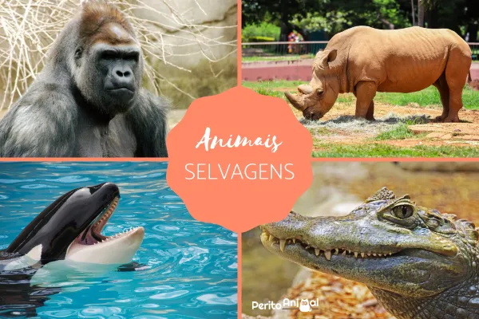

Perito animal > Curiosidades > Curiosidade do mundo animal
Curiosidade do mundo animal
NOMES DE ANIMAIS SELVAGENS
O relatório Planeta Vivo 2020, divulgado em setembro deste ano pela ONG World Wildlife Fund (WWF), aponta que a biodiversidade mundial tem sofrido grandes perdas: as populações de animais selvagens caíram 68% em média. A WWF monitorou indivíduos de cerca de 4.400 espécies, entre eles peixes, répteis, mamíferos, aves e anfíbios entre 1970 e 2016.